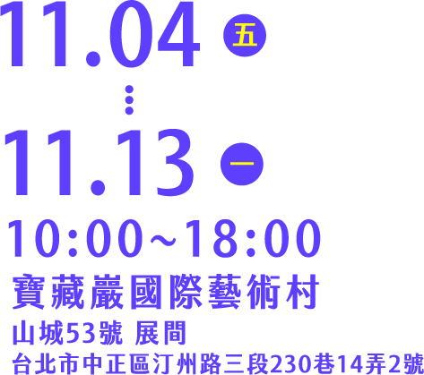
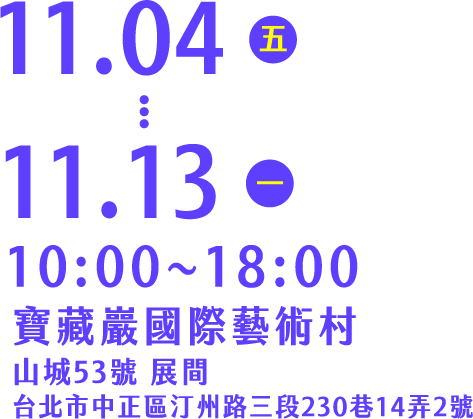

想透過腦波孵化出屬於你的火星意識體嗎？ 物種孵化員現正招募中>>


關於實驗室首席研究員羅威爾(Percival Lowell)在火星所發現的人造運河，其實僅是其個人對於未知的火星狀態所投射的異化想法,根據徳國哲學家瓦爾登費爾斯(Bernhard Waldenfels)提出的異化現象學(Phenomenology of the Alien)指出：「異化未知的想法 (alien) 起始於我們的內在，而非外在」，換句話說，過往所孵化的火星物種，其實很大程度上是源自各個研究員對於未知領域所投射的恐懼和期待。
因此，火星物種孵化實驗室最新主張，相較於向外在宇宙尋找火星生命的證據，向「內在宇宙」探索內在火星生命樣態也同等重要。
為了重塑人類與火星的關係性，這一次使用尋找內星智慧(Search for Intraterrestrial Intelligence, SITI)的孵化方式，將引導物種孵化員重新回到火星被異化的起點－火星的地理環境，由內而外地孵化出更具包容性的火星物種。
關於「尋找內星智慧」的方法，本實驗室的研究員特別借鏡具有未來考古意義(Archaeology of the Future)的尋找外星智慧計畫(Search for Extraterrestrial Intelligence, SETI)。在尋找外星智慧的計畫中，科學家透過無線電望遠鏡，在太空中尋找能夠代表外星文明的窄頻訊號，不過由於光速的限制，如果在太空中觀測到其他文明發出的窄頻訊號，這個訊號對於此文明來說是過往的歷史，但對於收到訊號的人類卻是未來發展的可能性。
而在尋找內星智慧的方法中，實驗室研究員透過腦波感測器，在大腦中尋找能代表內在火星文明的腦波訊號，當受測的大腦對於火星進行意識觀想時，感測器所偵測到的腦波訊號，對於發出訊號的神經元來說是過往的念頭，但對於收到訊號的物種孵化員來說，卻是看待火星的未來可能，因而滿足內在宇宙的未來考古意義。
一個大腦即代表一個內在宇宙，透過科學式的環境設定和情境式的聽覺引導，物種孵化員將透過想像力化身為棲息在火星的意識體，感受在這顆星球上的環境狀態和氛圍情緒，在觀想火星意識體的同時，腦波訊號將會被轉譯為即時的聲紋和型態，這個即時的聲音就好比是在與內在火星進行音樂性的對話，最終孵化出與孵化員具有連結性的火星意識體。
content02
content03
content04
content05
content06
贊助單位


 
